명성 업적샷 · 22장
통합 명성 9장 · 탐험·교역·전투·사교 각 3장 · 네 바다의 조화 1장 / 내장 ImageGen / 2026-10-27 · 그림을 누르면 원본을 봅니다.
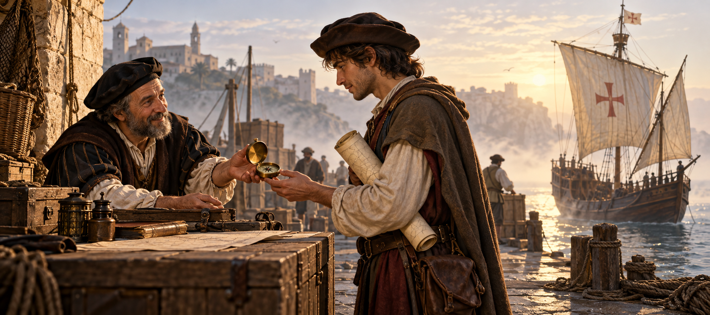
신참 모험가fame_total_5000
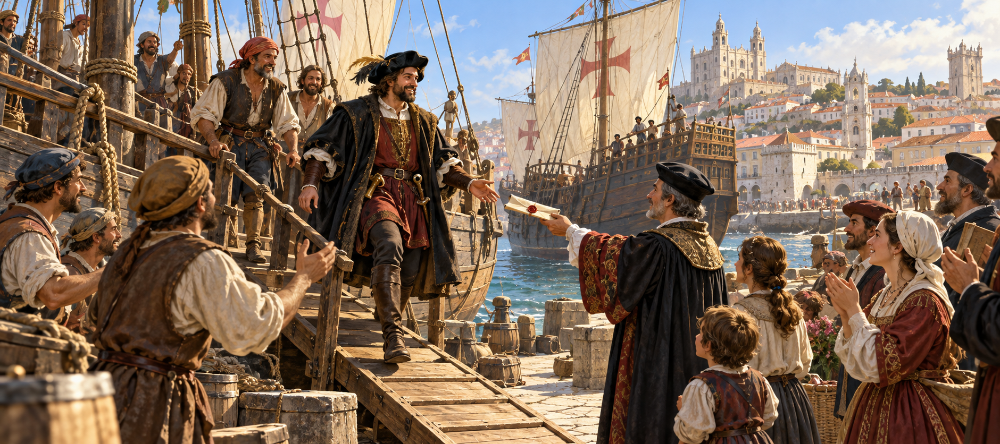
이름난 모험가fame_total_20000
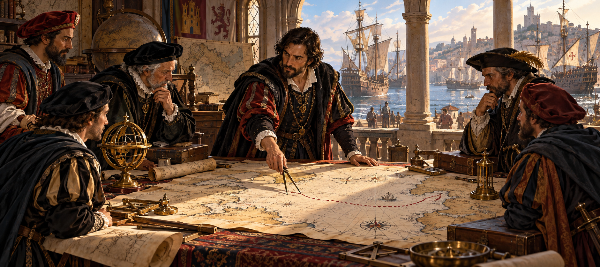
저명한 항해가fame_total_60000
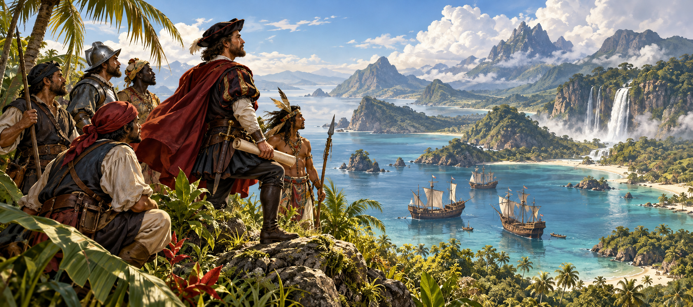
위대한 탐험가fame_total_150000
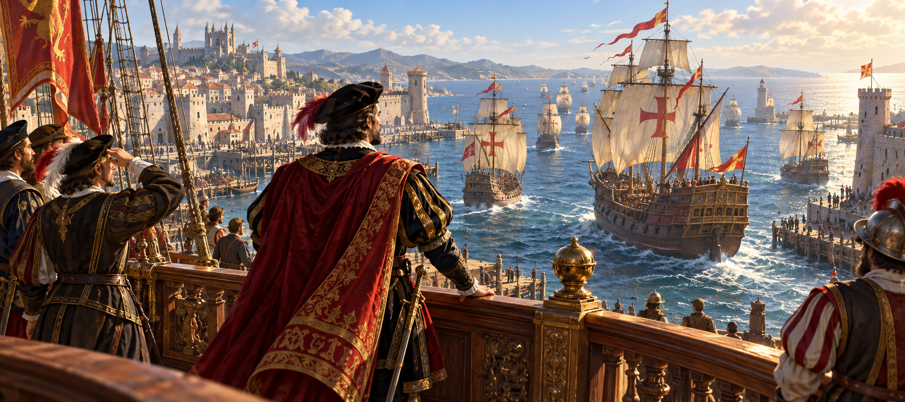
대항해자fame_total_400000
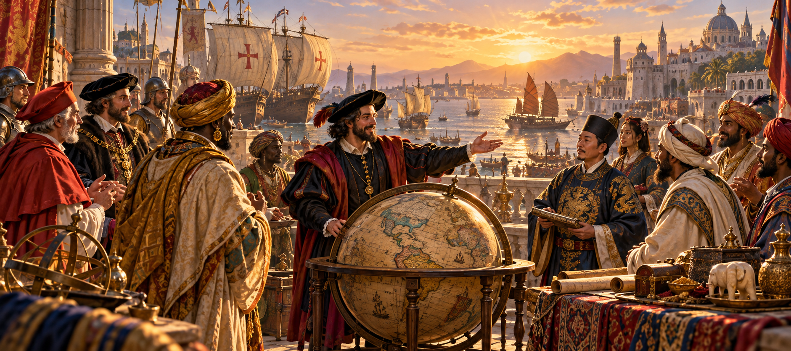
세계적인 대항해자fame_total_650000
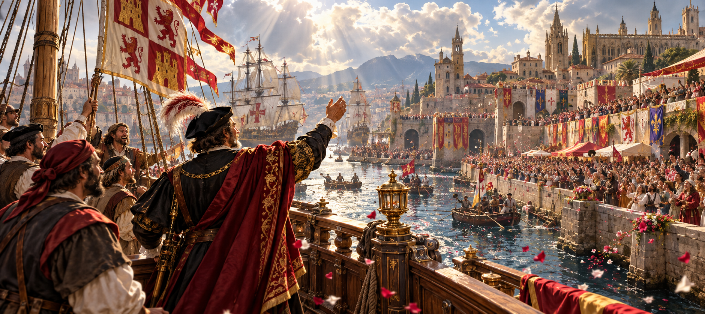
전설의 대항해자fame_total_1000000
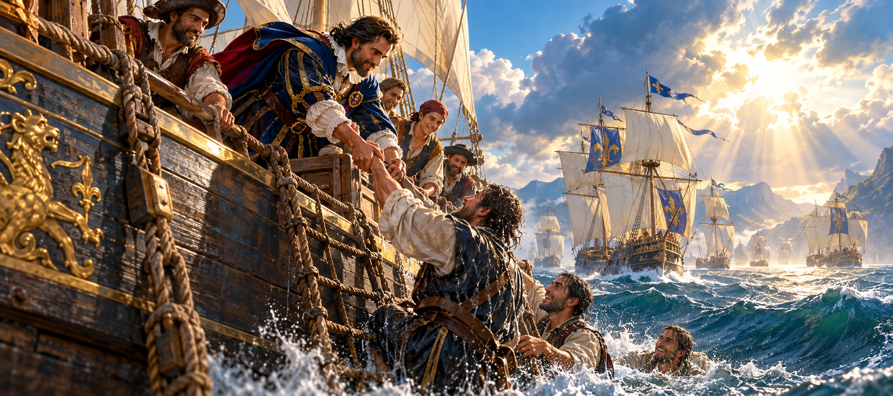
바다의 영웅fame_total_1500000
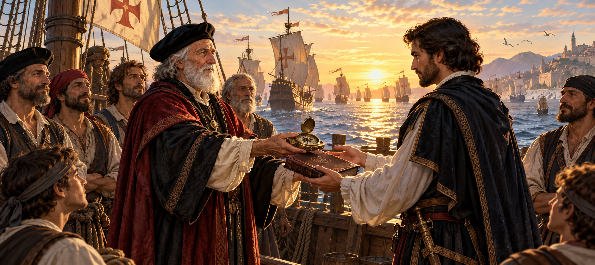
불멸의 항해자fame_total_2000000
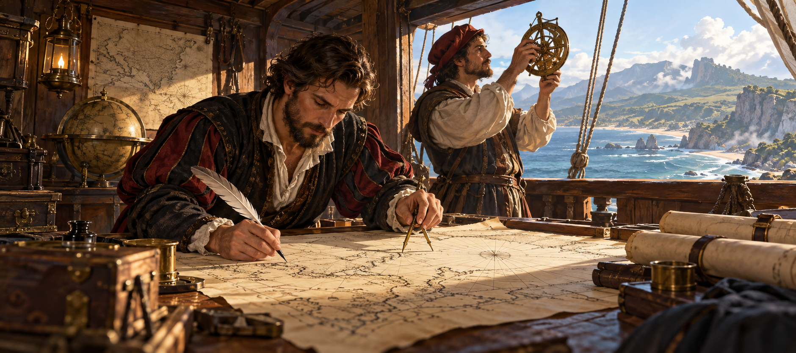
해도의 기록자fame_ex_20000
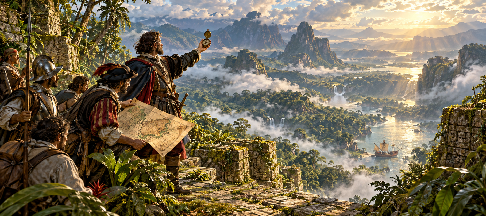
미지의 개척자fame_ex_150000
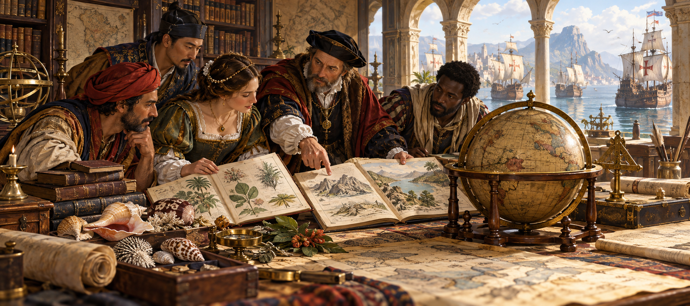
세계의 증인fame_ex_650000
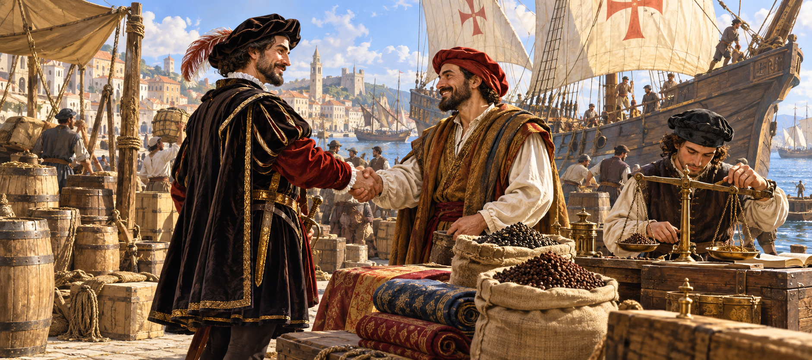
항로의 거래인fame_tr_20000
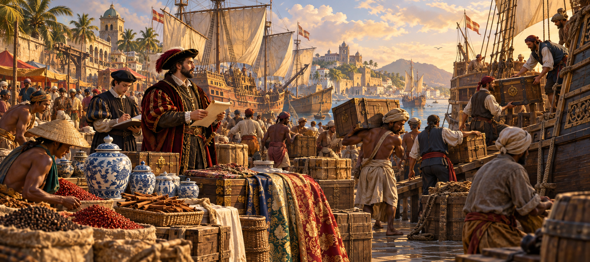
대양의 거상fame_tr_150000
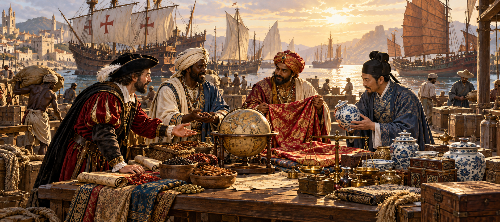
세계를 잇는 상인fame_tr_650000
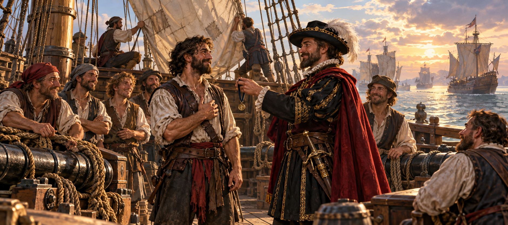
갑판의 용사fame_bt_20000
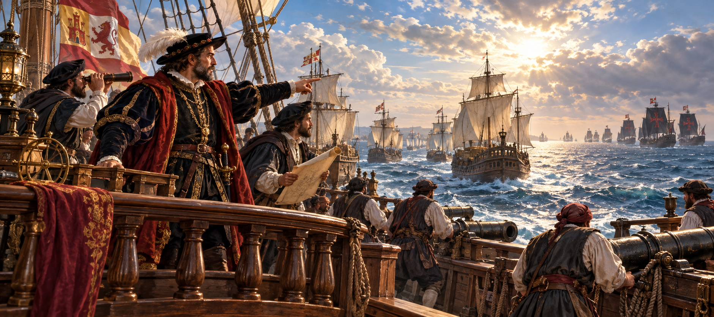
함대의 수호자fame_bt_150000
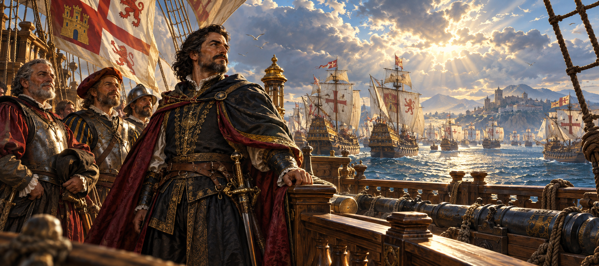
백전의 제독fame_bt_650000
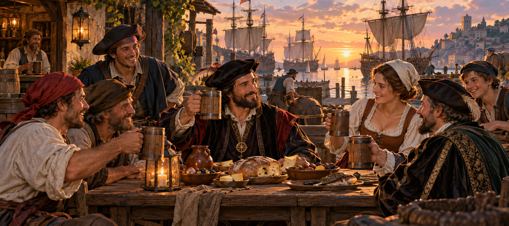
항구의 벗fame_so_20000
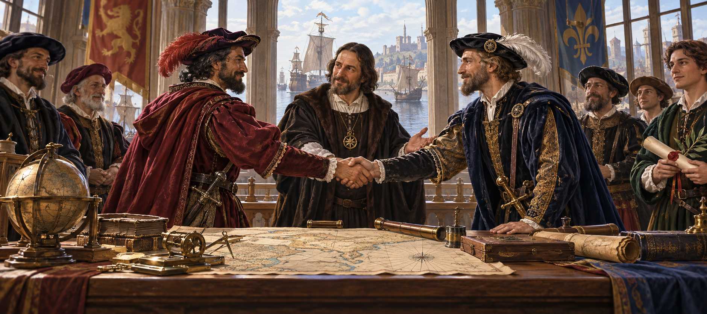
바다의 중재자fame_so_150000
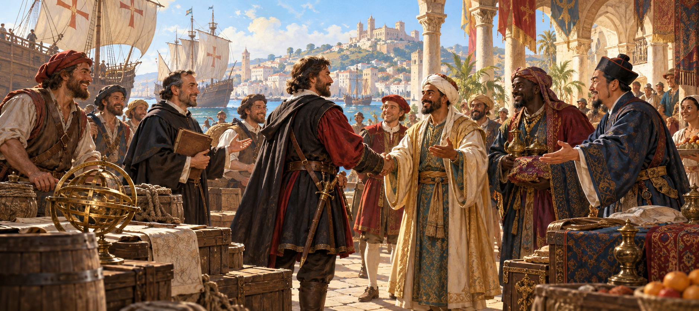
만인의 신뢰fame_so_650000
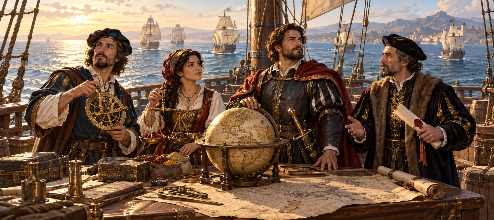
네 바다의 조화fame_balanced